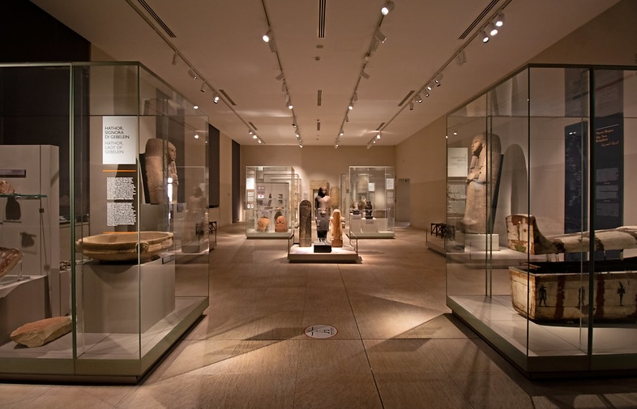
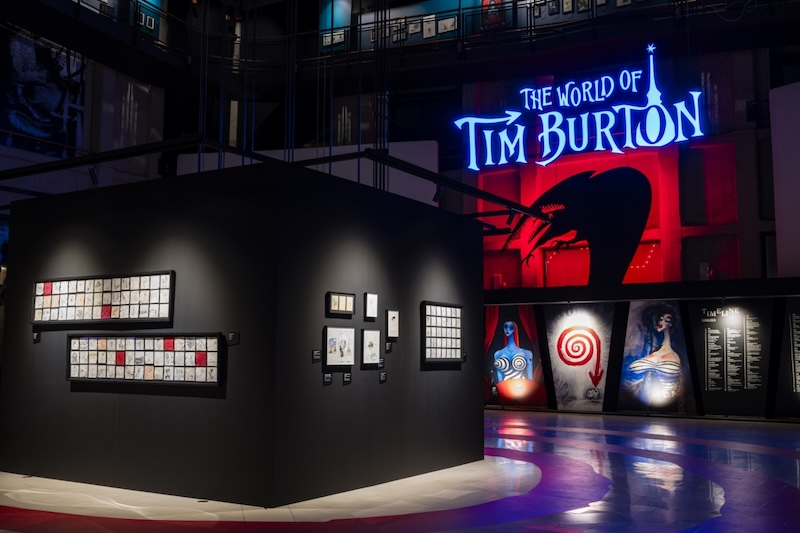
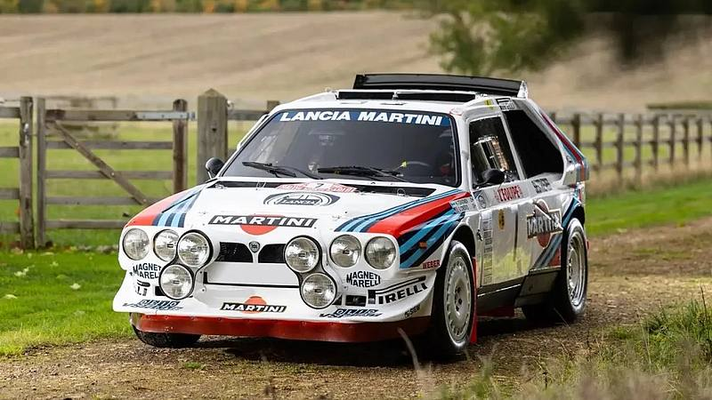

Torino, elegante e ricca di storia, è una città che offre un perfetto connubio tra arte, cultura e innovazione. Capitale del Piemonte e prima capitale d’Italia, custodisce tesori inestimabili che meritano di essere scoperti.
Se hai in programma una visita, ecco cinque luoghi imperdibili che raccontano l’anima della città.
Simbolo indiscusso di Torino, la Mole Antonelliana è un capolavoro architettonico che svetta nel cielo con i suoi 167 metri di altezza. Originariamente progettata come sinagoga, oggi ospita il Museo Nazionale del Cinema, uno dei più importanti d’Europa.
Salendo con l’ascensore panoramico, potrai godere di una vista mozzafiato sulla città e sulle Alpi circostanti. Di notte, l’illuminazione scenografica rende la Mole ancora più affascinante.
Torino vanta il secondo museo egizio più importante al mondo, dopo quello del Cairo. Fondato nel 1824, il Museo Egizio custodisce una straordinaria collezione di reperti che raccontano oltre 4000 anni di storia.
Mummie, sarcofagi, statue e papiri ti trasporteranno nell’antico Egitto, rendendo la visita un’esperienza unica. Da non perdere la celebre tomba di Kha e Merit e la statua di Ramses II, una delle più imponenti della collezione.
Nel cuore di Torino si trova il magnifico Palazzo Reale, residenza storica della dinastia sabauda. Questo imponente edificio barocco, dichiarato Patrimonio dell’Umanità dall’UNESCO, conserva al suo interno splendidi saloni affrescati, arredi d’epoca e la sontuosa Armeria Reale.
Il Palazzo è parte del complesso dei Musei Reali e include anche la Cappella della Sindone, recentemente restaurata, che ospitava la Sacra Sindone.
All’interno della Mole Antonelliana, il Museo Nazionale del Cinema è una tappa imperdibile per gli appassionati della settima arte.
Il percorso espositivo è un viaggio attraverso la storia del cinema, con oggetti di scena, locandine, proiezioni e installazioni interattive.
Grazie alla sua scenografia suggestiva e all’allestimento originale, il museo offre un’esperienza immersiva e coinvolgente, adatta a tutte le età.
Torino è la culla dell’industria automobilistica italiana e il Museo dell’Automobile ne è la perfetta celebrazione.
Con una collezione di oltre 200 veicoli, il museo ripercorre l’evoluzione dell’automobile, dalle prime carrozze a motore ai modelli futuristici. Tra i pezzi più iconici troverai la mitica Fiat 500, le auto da corsa Ferrari e prototipi avveniristici.
Un luogo affascinante per scoprire come la passione per le quattro ruote abbia segnato la storia di Torino e dell’Italia intera.
Torino è una città che sa sorprendere con il suo mix di storia, arte e innovazione.
Visitando la Mole Antonelliana, il Museo Egizio, il Palazzo Reale, il Museo del Cinema e il Museo dell’Automobile, potrai scoprire le molte sfaccettature di questa affascinante metropoli. Qualunque sia il tuo interesse, Torino saprà regalarti un’esperienza indimenticabile.